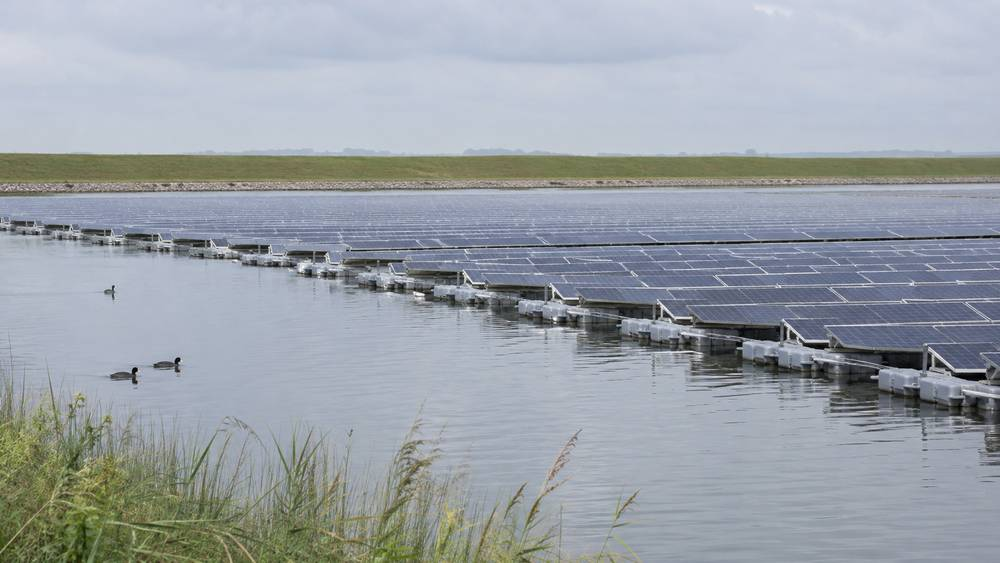

새만금 수상태양광 100MW, 전북개발공사가 사업자로

기후에너지환경부가 11월 17일 한국수력원자력 사업 가운데 1단계 2-5구역 양수를 인가했다. 사업비 2,580억 원, 2030년 상반기 상업운전이 목표다.
새만금 방조제 안쪽 수상태양광 가운데 전북특별자치도 몫 100MW의 발전사업자가 한국수력원자력에서 전북개발공사로 바뀌었다. 기후에너지환경부는 11월 24일 낸 공고 제2026-1057호에서 1단계 2-5구역 100MW 양수를 11월 17일 인가했다고 밝혔다. 공고는 이 사업을 '새만금 전북자치도 지역주도형 수상태양광 발전사업'으로 적었고, 전북개발공사가 발전사업자 지위를 이어받는다.
전북개발공사 누리집 사업안내를 보면 사업 면적은 약 1.08㎢, 총사업비는 2,580억 원이다. 사업 기간은 20년 운영을 포함해 2020년부터 2050년까지다. 공사는 2027년 하반기 공용시설 착공과 설계·조달·시공(EPC) 발주를 거쳐 2029년 12월 준공, 2030년 상반기 상업운전을 계획한다.
이 100MW는 2019년 6월 3일 도가 공사에 배분을 통보하면서 시작됐다. 공사 이사회가 2020년 8월 12일 승인했고, 도의회는 같은 해 9월 16일 의결했다. 2021년 2월 25일 공유수면 점사용허가가 나왔고, 사업 위치는 그해 5월 28일 확정됐다. 행정안전부는 2021년 12월 3일 지방공사채 발행을 승인했고, 2024년 12월 6일 발행 연장을 승인했다. 공사와 한수원의 양수도 계약은 올해 7월 13일 맺어졌다.
같은 공고에는 신안군 비금면 35필지의 '신안 비금태양광 1호 발전사업'을 ㈜비금그린에너지에서 비금솔라(유)가 넘겨받는 양수도 실렸다. 군산시가 100% 출자한 군산시민발전은 새만금 수상태양광 군산시 몫 100MW(2-6구역) 특수목적법인 지분 5.5%를 약정했다. 이 군산시 몫 사업은 4월 22일 전기위원회 양수도 인가를 받았다.
시민에너지 관점
2,580억 원짜리 공공 발전소가 지방공기업 손에 들어오면서 수익을 도민에게 돌릴 길이 열렸다. 그러나 공사 누리집 사업안내에는 도민 출자나 이익공유 방식이 아직 나와 있지 않다. 군산 몫 특수목적법인에서 시민 지분이 5.5%에 그친 일을 되풀이하지 않으려면, 2027년 하반기 공사 발주 전에 도민 채권과 협동조합 출자 비율부터 정해야 한다. 전북도와 도의회가 사업 계획을 다시 들여다볼 때다.
출처: 기후에너지환경부 2026-11-24 공고 제2026-1057호 「발전사업 양수인가 공고(새만금 수상태양광 발전사업 등 2건)」 원문 보기
출처: 전북개발공사 2026-11-26 누리집 사업안내 「새만금 태양광 발전사업」(사업 개요·추진현황·추진계획) 원문 보기
출처: 군산시민발전주식회사 2026-11-26 누리집 사업안내 「수상태양광사업」(추진사항) 원문 보기